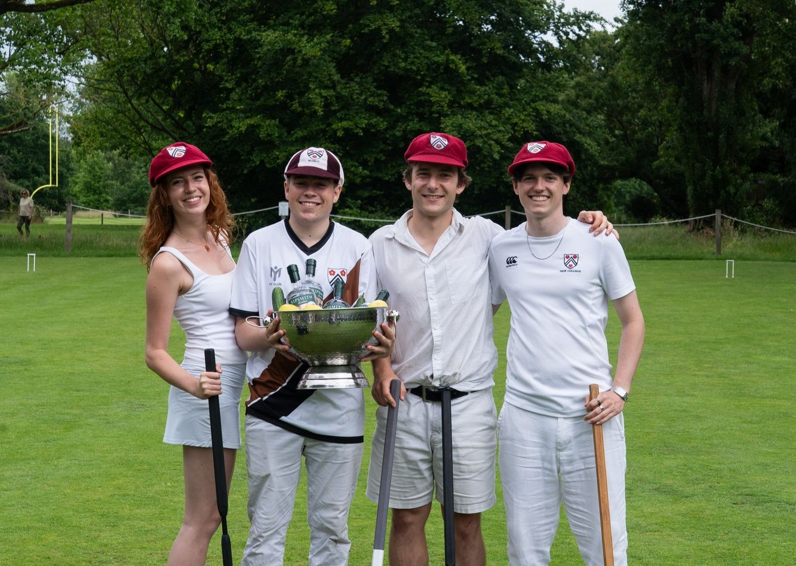

With around 2,000 participants every year, Croquet Cuppers is one of the biggest sporting events in Oxford University! Once again, the Croquet Association has generously provided prizes - there will be champagne and lots of other prizes for the winners and runners up!
Playing croquet is a great way to spend your summer in Oxford, whether you just want to relax and hit some balls about in the sun or you're aiming for a Half Blue. Most colleges will have kit and a court, so you just need to bring some enthusiasm.and perhaps a little Pimm's!
Each team has four players and competes as two doubles pairs. No previous experience is required, and colleges may enter more than one team. Entry fees and deadlines are published on the current Cuppers pages.m, which at £1 a person is an absolute steal given how much fun Cuppers is!
As in previous years, the competition will run in a direct knockout format throughout Trinity term.
Below are links to the
- Cuppers Facebook Event 2026
- Cuppers Signup 2026
- Cuppers Rules
- -- Submit Cuppers Results 2026
- -- CUPPERS DRAW 2026 (slow to load)
- 2026 (pdf)
Deadlines for results submission:
- Round 1: 10 May
- Round 2: 17 May
- Round 3: 24 May
- Round 4: 31 May
- Round 5: 7 June
- Round 6: 14 June
- Final: 20 June
The competition will be run predominantly through email, as in previous years, with both results and details of each round's matches relayed through the draw website.
Please follow us on Instagram if you don't already, we'll post general updates and helpful reminders about the competition. Find us with the user name @oucroquet, or follow this link: https://www.instagram.com/oucroquet/
As Cuppers is such a huge competition, we run it to a very tight schedule. Deadlines will be strictly enforced, although reasonable requests for extensions will be granted at the discretion of the Cuppers Director. Please send results of your matches using the "Cuppers Results Submission" link above.
Free Beginners' Croquet
Coaching at the University croquet courts ( map ) |
Once again the Oxford University Association Croquet Club will be inviting all students to join us at the University courts for free coaching sessions from 5-6pm Tuesday and Thursday evenings, Weeks 1-4 , Trinity Term, so that even complete beginners can have a good chance of progressing in the competition. All you need to bring are flat soled shoes. All students can also join the University Association Croquet Club: from £12 a term you will get the use of the high quality University courts, extra coaching at a more personal level and can play in the Club's fixtures .
You can find the nearest croquet club to your home, where you will be able to get more coaching and competitive play here .
Croquet England is the national governing body for the sport of Croquet in England and is responsible for promoting community participation and advancing the sport. https://www.croquetengland.org.uk/ . It runs an online shop , where both its members and the public can purchase books and equipment, with the benefit of advice if needed. |